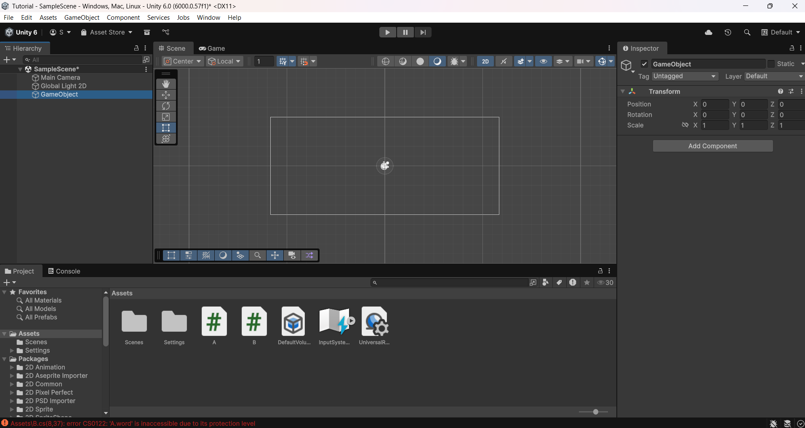
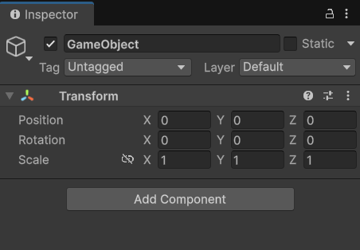
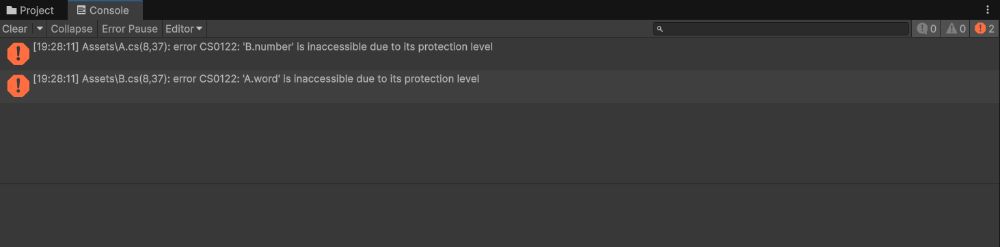

Making our First Project#
Unity better have installed by now because we are creating our first project. Select the blue, ‘New Project’ button. Name it whatever you want and put it in whatever folder you want. But we will select ‘Universal 2D’ in the middle section. Once you’re ready, hit ‘Create Project’.
Now we’ll wait for a minute or so, and we can look at what everything means in the meantime;

Scene Hierarchy#
On the left, we have our scene hierarchy anything in our scene will show up here. And a scene is basically a room in Space Rescue. Its just a differen’t section of the game. For Minecraft you’d have something like this, Game, Multiplayer, Worlds, etc. and you can swap between them.
Inspector#

On the right we have the inspector, one of the most important sections in our view. I’ve just selected an empty GameObject (basically the fundamental root of everything in Unity), and it only has one script attached, that being the Transform script, it has a position - Vector 3, rotation - “Vector 3”, and scale - Vector 3. A Vector 3, is just a position in 3D Space, for example, (1,2,0), we’ll normally keep z as zero because this is 2D. Unity will convert our Vector 3 rotation to a Quaternion, which is basically complex math for determing angles because Vector 3s had issues, and I’ll talk more about rotation later on.
Also on the inspector we can add a new script, lock it, to keep the inspector showing the GameObject, even if we select the Camera, and disable the object entirely. We can also change the Tag, and Layer of the Object which will be used for ignoring certain objects.
Project and Console#
Down the bottom we have the Project and the Console windows, project is really simple, it shows files. You can also make folders. Please keep files organised. We can select the Console windows which will show us all of our errors.

We have the Logs - Speech Bubble, Warnings - Warning sign, and Errors - Stop sign. If we press on each of these it toggles the visibility of those types of messages. Each of these correlates to the Debug.Logs we talked about in A quick overview of C#.